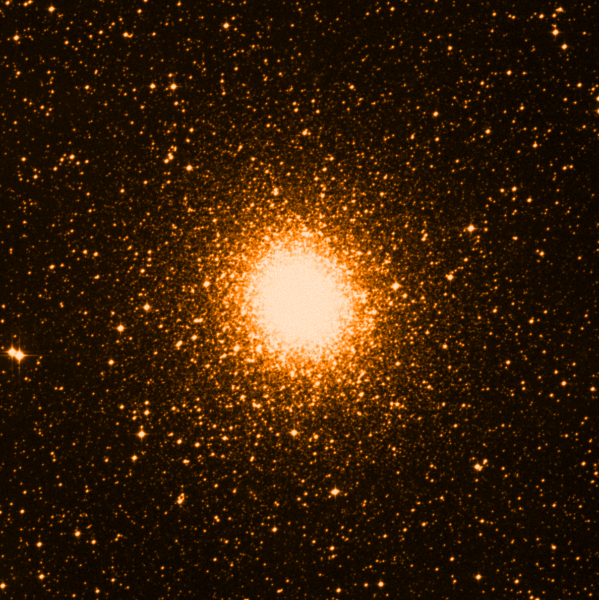

Clase 10: Bases de datos astronómicas y Astroquery#
Astroquery es una colección de herramientas en Python diseñadas para facilitar el acceso a datos astronómicos alojados en archivos y servicios web de todo el mundo. En lugar de descargar manualmente archivos desde sitios web individuales, Astroquery permite buscar, filtrar y descargar catálogos, imágenes y espectros directamente desde Python.
Cada servicio (como SIMBAD, VizieR o MAST) tiene su propio módulo dentro de la librería, y cada módulo, por ser desarrollado de forma independiente, puede tener distintos niveles de documentación/funcionalidad. Lista de módulos.
Casi todas las consultas realizadas con Astroquery devuelven los datos en formato de astropy.table.Table. Los datos descargados pueden luego ser procesados con las herramientas de Astropy.
Está en constante actualización y puede estar incompleto (p. ej. el caso de ExoMol).
Bases de datos comúnmente usadas en astronomía#
SIMBAD (Set of Identifications, Measurements and Bibliography for Astronomical Data)#
Provee identificación y bibliografía de objetos astronómicos fuera del Sistema Solar. Permite saber que un mismo objeto tiene nombres distintos en diferentes catálogos. Además de coordenadas, proporciona datos básicos (flujos, tipos espectrales, paralajes) y listas de artículos científicos donde se menciona cada objeto. También identifica la pertenencia de un objeto a un grupo (p. ej. un cúmulo).
VizieR (Catalogue Service)#
Repositorio de catálogos astronómicos y tablas de datos publicados en revistas científicas. SIMBAD se centra en objetos individuales mientras que VizieR se centra en tablas con catálogos completos. Permite realizar búsquedas complejas dentro de miles de catálogos (como Gaia, SDSS o 2MASS) y filtrar datos por columnas específicas (magnitud, edad, metalicidad, etc.).
NED (NASA/IPAC Extragalactic Database)#
Base de datos especializada en objetos extragalácticos (galaxias, cuásares, supernovas). Proporciona datos multi-longitud de onda, corrimientos al rojo (redshifts) y diámetros. También entrega distancias extragalácticas independientes de redshifts (NED-D).
JPL Exoplanet Archive (NASA)#
Archivo oficial de la NASA para el estudio de planetas fuera del Sistema Solar y sus estrellas anfitrionas. Contiene los parámetros planetarios confirmados y los datos de misiones como Kepler, K2 y TESS. Ofrece herramientas de visualización y series temporales (curvas de luz) para caracterizar tránsitos planetarios.
Exoplanet.eu (The Extrasolar Planets Encyclopaedia)#
Base de datos del Observatorio de París, es una de las bases de datos de exoplanetas más antiguas y completas. Se diferencia por ser muy inclusiva, listando tanto planetas confirmados como candidatos.
NASA JPL Horizons#
Sistema de efemérides de alta precisión para todos los cuerpos del Sistema Solar (planetas, lunas, asteroides, cometas y naves espaciales). Calcula posiciones y velocidades en el tiempo para determinar la posición exacta de un cuerpo del Sistema Solar en una fecha y hora específicas.
MAST (Mikulski Archive for Space Telescopes)#
Repositorio de la NASA para datos de telescopios espaciales en óptico, UV e IR. Aloja los datos de Hubble (HST), James Webb (JWST), TESS, Kepler, etc. Aquí se encuentran los datos “crudos” y reducidos de los principales telescopios espaciales.
ESA Sky / Gaia Archive#
Portal de acceso a las misiones de la Agencia Espacial Europea. Incluye el Gaia Archive, que contiene el catálogo más preciso de astrometría (posiciones, paralajes y movimientos propios) de más de mil millones de estrellas.
ESO Science Archive Facility (European Southern Observatory)#
Da acceso a los datos recopilados por los telescopios de la ESO en Chile, incluyendo el VLT (Very Large Telescope), ALMA (en conjunto con otros socios) y los telescopios de rastreo VST y VISTA. Ofrece tanto datos científicos crudos como productos procesados de alta calidad.
NRAO Archive (National Radio Astronomy Observatory)#
Permite acceder a los datos de radio interferómetros como el VLA (Very Large Array) y ALMA. Proporciona visibilidades (datos crudos de interferometría) e imágenes reconstruidas.
ADS (NASA/SAO Astrophysics Data System)#
Base de datos de literatura científica. Indexa casi todos los artículos de astronomía y física del mundo. Su integración con Astroquery permite buscar bibliografía y, en muchos casos, extraer tablas de datos vinculadas a los artículos. Requiere un API token para interactuar con astroquery.
arXiv (Preprint Server)#
Repositorio de acceso abierto para preprints de artículos científicos en las áreas de física, astronomía, matemáticas y computación. Permite compartir descubrimientos de manera inmediata, meses antes de que sean publicados en revistas tradicionales. En astronomía, casi todo artículo relevante aparece primero en la sección astro-ph.
Otros servicios#
DSS (Online Digitized Sky Survey)#
Provee digitalizaciones de las placas fotográficas del cielo obtenidas por los observatorios de Palomar y UK Schmidt.
HLA (Hubble Legacy Archive)#
Versión optimizada del archivo del Telescopio Espacial Hubble. Ofrece productos de datos “listos para la ciencia” (combinados y calibrados), además de herramientas de visualización interactiva para inspeccionar rápidamente las observaciones del HST.
IRSA (Infrared Science Archive)#
El repositorio principal de la NASA para datos en el infrarrojo y submilimétrico. Aloja datos de misiones como Spitzer, WISE, NEOWISE y Planck, siendo el lugar de referencia para estudiar el medio interestelar y objetos oscurecidos por polvo.
2MASS (Two Micron All Sky Survey)#
Catálogo y archivo de imágenes del mapeo de todo el cielo en las bandas J, H y Ks. Es una herramienta esencial para la identificación de estrellas frías, enanas marrones y para “ver” a través de la extinción galáctica hacia el centro de la Vía Láctea.
HSA (Herschel Science Archive)#
Contiene todas las observaciones del Observatorio Espacial Herschel de la ESA. Proporciona datos en el infrarrojo lejano, siendo la última misión en décadas en observar en estas longitudes de onda.
HEASARC (High Energy Astrophysics Archive Research Center)#
Es el archivo central de la NASA para la astronomía de altas energías (Rayos X y Rayos Gamma), además de radiación de fondo de microondas. Incluye datos de misiones como Chandra, XMM-Newton, Swift y Fermi.
LAMBDA (Legacy Archive for Microwave Background Data Analysis)#
Repositorio especializado en datos de la Radiación de Fondo de Microondas (CMB). Contiene los mapas y productos de misiones importantes para la cosmología y estudios de la Vía Láctea como COBE, WMAP y Planck.
PDS (Planetary Data System)#
El archivo oficial de la NASA para todos los datos de misiones planetarias. Incluye imágenes, espectros y mediciones de in-situ de Marte, Júpiter, Saturno y otros cuerpos del Sistema Solar recopilados por sondas y landers.
SDSS (Sloan Digital Sky Survey)#
Imágenes multi-banda y espectros para millones de galaxias, cuásares y estrellas. Es la base de gran parte de la cartografía moderna del universo a gran escala.
DESI (Dark Energy Spectroscopic Instrument) Data Release#
Experimento espectroscópico de energía oscura. Busca medir la historia de expansión del universo y la naturaleza de la energía oscura mediante el mapeo de 40 millones de galaxias y cuásares. Proporciona espectros de alta precisión para estudiar las Oscilaciones Acústicas de Bariones (BAO) y el crecimiento de estructuras a gran escala.
NOIRLab Data Archive (National Optical-Infrared Astronomy Research Laboratory)#
Base de datos de los observatorios financiados por la NSF en EE. UU., incluyendo Cerro Tololo (CTIO), Kitt Peak (KPNO) y el Observatorio Gemini. Aloja los datos de mapeos masivos como el DES (Dark Energy Survey) y es el futuro hogar de los datos del Observatorio Vera C. Rubin.
Bases de datos espectrales#
Splatalogue (Spectral Line Atlas of Interstellar Molecules)#
Base de datos exhaustiva para la espectroscopía molecular rotacional, diseñada específicamente para la radioastronomía y astronomía submilimétrica. Consolida datos de diversos catálogos para facilitar la identificación de líneas moleculares en observaciones de interferómetros como ALMA o el VLA.
CDMS (Cologne Database for Molecular Spectroscopy)#
Provee una compilación de frecuencias de transición molecular y parámetros espectroscópicos para átomos y moléculas de interés astrofísico. Se usa para modelar la emisión y absorción de gases en el medio interestelar y atmósferas estelares.
HITRAN (High-Resolution Transmission Molecular Absorption Database)#
Repositorio de parámetros espectroscópicos de alta resolución utilizado para predecir y simular la transmisión y emisión de luz en atmósferas. Se usa para las ciencias atmosféricas terrestres y también para astroquímica en el medio interestelar, en discos formadores de planetas y en exoplanetas.
Atomic Line List#
Base de datos diseñada para la identificación de líneas de emisión y absorción atómica. Permite buscar transiciones en un rango amplio de longitudes de onda, proporcionando niveles de energía y probabilidades de transición para el análisis de espectros estelares y nebulosas.
Explorando Gaia con Astroquery y el servicio TAP#
TAP, o Table Access Protocol es un estándar establecido por la IVOA (International Virtual Observatory Alliance) que define cómo consultar tablas de datos astronómicos en un servidor remoto. TAP permite realizar queries utilizando ADQL (Astronomical Data Query Language), siempre y cuando cada servicio lo soporte.
!pip install astroquery
Requirement already satisfied: astroquery in /opt/homebrew/Caskroom/miniconda/base/envs/jupyter-book/lib/python3.10/site-packages (0.4.11)
Requirement already satisfied: numpy>=1.20 in /opt/homebrew/Caskroom/miniconda/base/envs/jupyter-book/lib/python3.10/site-packages (from astroquery) (2.2.6)
Requirement already satisfied: astropy>=5.0 in /opt/homebrew/Caskroom/miniconda/base/envs/jupyter-book/lib/python3.10/site-packages (from astroquery) (6.1.7)
Requirement already satisfied: requests>=2.19 in /opt/homebrew/Caskroom/miniconda/base/envs/jupyter-book/lib/python3.10/site-packages (from astroquery) (2.33.1)
Requirement already satisfied: beautifulsoup4>=4.8 in /opt/homebrew/Caskroom/miniconda/base/envs/jupyter-book/lib/python3.10/site-packages (from astroquery) (4.14.3)
Requirement already satisfied: html5lib>=0.999 in /opt/homebrew/Caskroom/miniconda/base/envs/jupyter-book/lib/python3.10/site-packages (from astroquery) (1.1)
Requirement already satisfied: keyring>=15.0 in /opt/homebrew/Caskroom/miniconda/base/envs/jupyter-book/lib/python3.10/site-packages (from astroquery) (25.7.0)
Requirement already satisfied: pyvo>=1.5 in /opt/homebrew/Caskroom/miniconda/base/envs/jupyter-book/lib/python3.10/site-packages (from astroquery) (1.8.1)
Requirement already satisfied: pyerfa>=2.0.1.1 in /opt/homebrew/Caskroom/miniconda/base/envs/jupyter-book/lib/python3.10/site-packages (from astropy>=5.0->astroquery) (2.0.1.5)
Requirement already satisfied: astropy-iers-data>=0.2024.10.28.0.34.7 in /opt/homebrew/Caskroom/miniconda/base/envs/jupyter-book/lib/python3.10/site-packages (from astropy>=5.0->astroquery) (0.2026.4.27.1.3.2)
Requirement already satisfied: PyYAML>=3.13 in /opt/homebrew/Caskroom/miniconda/base/envs/jupyter-book/lib/python3.10/site-packages (from astropy>=5.0->astroquery) (6.0.3)
Requirement already satisfied: packaging>=19.0 in /opt/homebrew/Caskroom/miniconda/base/envs/jupyter-book/lib/python3.10/site-packages (from astropy>=5.0->astroquery) (26.2)
Requirement already satisfied: soupsieve>=1.6.1 in /opt/homebrew/Caskroom/miniconda/base/envs/jupyter-book/lib/python3.10/site-packages (from beautifulsoup4>=4.8->astroquery) (2.8.3)
Requirement already satisfied: typing-extensions>=4.0.0 in /opt/homebrew/Caskroom/miniconda/base/envs/jupyter-book/lib/python3.10/site-packages (from beautifulsoup4>=4.8->astroquery) (4.15.0)
Requirement already satisfied: six>=1.9 in /opt/homebrew/Caskroom/miniconda/base/envs/jupyter-book/lib/python3.10/site-packages (from html5lib>=0.999->astroquery) (1.17.0)
Requirement already satisfied: webencodings in /opt/homebrew/Caskroom/miniconda/base/envs/jupyter-book/lib/python3.10/site-packages (from html5lib>=0.999->astroquery) (0.5.1)
Requirement already satisfied: importlib_metadata>=4.11.4 in /opt/homebrew/Caskroom/miniconda/base/envs/jupyter-book/lib/python3.10/site-packages (from keyring>=15.0->astroquery) (8.8.0)
Requirement already satisfied: jaraco.classes in /opt/homebrew/Caskroom/miniconda/base/envs/jupyter-book/lib/python3.10/site-packages (from keyring>=15.0->astroquery) (3.4.0)
Requirement already satisfied: jaraco.functools in /opt/homebrew/Caskroom/miniconda/base/envs/jupyter-book/lib/python3.10/site-packages (from keyring>=15.0->astroquery) (4.4.0)
Requirement already satisfied: jaraco.context in /opt/homebrew/Caskroom/miniconda/base/envs/jupyter-book/lib/python3.10/site-packages (from keyring>=15.0->astroquery) (6.1.2)
Requirement already satisfied: zipp>=3.20 in /opt/homebrew/Caskroom/miniconda/base/envs/jupyter-book/lib/python3.10/site-packages (from importlib_metadata>=4.11.4->keyring>=15.0->astroquery) (3.23.1)
Requirement already satisfied: charset_normalizer<4,>=2 in /opt/homebrew/Caskroom/miniconda/base/envs/jupyter-book/lib/python3.10/site-packages (from requests>=2.19->astroquery) (3.4.7)
Requirement already satisfied: idna<4,>=2.5 in /opt/homebrew/Caskroom/miniconda/base/envs/jupyter-book/lib/python3.10/site-packages (from requests>=2.19->astroquery) (3.13)
Requirement already satisfied: urllib3<3,>=1.26 in /opt/homebrew/Caskroom/miniconda/base/envs/jupyter-book/lib/python3.10/site-packages (from requests>=2.19->astroquery) (2.6.3)
Requirement already satisfied: certifi>=2023.5.7 in /opt/homebrew/Caskroom/miniconda/base/envs/jupyter-book/lib/python3.10/site-packages (from requests>=2.19->astroquery) (2026.4.22)
Requirement already satisfied: more-itertools in /opt/homebrew/Caskroom/miniconda/base/envs/jupyter-book/lib/python3.10/site-packages (from jaraco.classes->keyring>=15.0->astroquery) (11.0.2)
Requirement already satisfied: backports.tarfile in /opt/homebrew/Caskroom/miniconda/base/envs/jupyter-book/lib/python3.10/site-packages (from jaraco.context->keyring>=15.0->astroquery) (1.2.0)
from astroquery.gaia import Gaia
In preparation for Gaia DR4, the Gaia archive is in evolution. Unfortunately, it may be unstable at times and particular types of queries may time out. Please consider registering for a user account (https://www.cosmos.esa.int/web/gaia-users/register). For questions or advice, please contact the Gaia helpdesk (https://www.cosmos.esa.int/web/gaia/gaia-helpdesk).
tables = Gaia.load_tables(only_names=True)
for table in (tables):
print(table.get_qualified_name())
INFO: Retrieving tables... [astroquery.utils.tap.core]
INFO: Parsing tables... [astroquery.utils.tap.core]
INFO: Done. [astroquery.utils.tap.core]
external.apassdr9
external.catwise2020
external.gaiadr2_astrophysical_parameters
external.gaiadr2_geometric_distance
external.gaiaedr3_distance
external.gaiaedr3_gcns_main_1
external.gaiaedr3_gcns_rejected_1
external.gaiaedr3_spurious
external.gaia_eso_survey
external.galex_ais
external.lamost_dr9_lrs
external.lamost_dr9_mrs
external.ravedr5_com
external.ravedr5_dr5
external.ravedr5_gra
external.ravedr5_on
external.ravedr6
external.sdssdr13_photoprimary
external.skymapperdr1_master
external.skymapperdr2_master
external.tmass_xsc
external.xgboost_table1
external.xgboost_table2
gaiadr1.aux_qso_icrf2_match
gaiadr1.ext_phot_zero_point
gaiadr1.allwise_best_neighbour
gaiadr1.allwise_neighbourhood
gaiadr1.gsc23_best_neighbour
gaiadr1.gsc23_neighbourhood
gaiadr1.ppmxl_best_neighbour
gaiadr1.ppmxl_neighbourhood
gaiadr1.sdss_dr9_best_neighbour
gaiadr1.sdss_dr9_neighbourhood
gaiadr1.tmass_best_neighbour
gaiadr1.tmass_neighbourhood
gaiadr1.ucac4_best_neighbour
gaiadr1.ucac4_neighbourhood
gaiadr1.urat1_best_neighbour
gaiadr1.urat1_neighbourhood
gaiadr1.cepheid
gaiadr1.phot_variable_time_series_gfov
gaiadr1.phot_variable_time_series_gfov_statistical_parameters
gaiadr1.rrlyrae
gaiadr1.variable_summary
gaiadr1.allwise_original_valid
gaiadr1.gsc23_original_valid
gaiadr1.ppmxl_original_valid
gaiadr1.sdssdr9_original_valid
gaiadr1.tmass_original_valid
gaiadr1.ucac4_original_valid
gaiadr1.urat1_original_valid
gaiadr1.gaia_source
gaiadr1.tgas_source
gaiadr2.aux_allwise_agn_gdr2_cross_id
gaiadr2.aux_iers_gdr2_cross_id
gaiadr2.aux_sso_orbit_residuals
gaiadr2.aux_sso_orbits
gaiadr2.dr1_neighbourhood
gaiadr2.allwise_best_neighbour
gaiadr2.allwise_neighbourhood
gaiadr2.apassdr9_best_neighbour
gaiadr2.apassdr9_neighbourhood
gaiadr2.gsc23_best_neighbour
gaiadr2.gsc23_neighbourhood
gaiadr2.hipparcos2_best_neighbour
gaiadr2.hipparcos2_neighbourhood
gaiadr2.panstarrs1_best_neighbour
gaiadr2.panstarrs1_neighbourhood
gaiadr2.ppmxl_best_neighbour
gaiadr2.ppmxl_neighbourhood
gaiadr2.ravedr5_best_neighbour
gaiadr2.ravedr5_neighbourhood
gaiadr2.sdssdr9_best_neighbour
gaiadr2.sdssdr9_neighbourhood
gaiadr2.tmass_best_neighbour
gaiadr2.tmass_neighbourhood
gaiadr2.tycho2_best_neighbour
gaiadr2.tycho2_neighbourhood
gaiadr2.urat1_best_neighbour
gaiadr2.urat1_neighbourhood
gaiadr2.sso_observation
gaiadr2.sso_source
gaiadr2.vari_cepheid
gaiadr2.vari_classifier_class_definition
gaiadr2.vari_classifier_definition
gaiadr2.vari_classifier_result
gaiadr2.vari_long_period_variable
gaiadr2.vari_rotation_modulation
gaiadr2.vari_rrlyrae
gaiadr2.vari_short_timescale
gaiadr2.vari_time_series_statistics
gaiadr2.panstarrs1_original_valid
gaiadr2.gaia_source
gaiadr2.ruwe
gaiadr3.gaia_source
gaiadr3.gaia_source_lite
gaiadr3.astrophysical_parameters
gaiadr3.astrophysical_parameters_supp
gaiadr3.oa_neuron_information
gaiadr3.oa_neuron_xp_spectra
gaiadr3.total_galactic_extinction_map
gaiadr3.total_galactic_extinction_map_opt
gaiadr3.commanded_scan_law
gaiadr3.allwise_best_neighbour
gaiadr3.allwise_neighbourhood
gaiadr3.apassdr9_best_neighbour
gaiadr3.apassdr9_join
gaiadr3.apassdr9_neighbourhood
gaiadr3.dr2_neighbourhood
gaiadr3.gsc23_best_neighbour
gaiadr3.gsc23_join
gaiadr3.gsc23_neighbourhood
gaiadr3.hipparcos2_best_neighbour
gaiadr3.hipparcos2_neighbourhood
gaiadr3.panstarrs1_best_neighbour
gaiadr3.panstarrs1_join
gaiadr3.panstarrs1_neighbourhood
gaiadr3.ravedr5_best_neighbour
gaiadr3.ravedr5_join
gaiadr3.ravedr5_neighbourhood
gaiadr3.ravedr6_best_neighbour
gaiadr3.ravedr6_join
gaiadr3.ravedr6_neighbourhood
gaiadr3.sdssdr13_best_neighbour
gaiadr3.sdssdr13_join
gaiadr3.sdssdr13_neighbourhood
gaiadr3.skymapperdr2_best_neighbour
gaiadr3.skymapperdr2_join
gaiadr3.skymapperdr2_neighbourhood
gaiadr3.tmass_psc_xsc_best_neighbour
gaiadr3.tmass_psc_xsc_join
gaiadr3.tmass_psc_xsc_neighbourhood
gaiadr3.tycho2tdsc_merge_best_neighbour
gaiadr3.tycho2tdsc_merge_neighbourhood
gaiadr3.urat1_best_neighbour
gaiadr3.urat1_neighbourhood
gaiadr3.galaxy_candidates
gaiadr3.galaxy_catalogue_name
gaiadr3.qso_candidates
gaiadr3.qso_catalogue_name
gaiadr3.nss_acceleration_astro
gaiadr3.nss_non_linear_spectro
gaiadr3.nss_two_body_orbit
gaiadr3.nss_vim_fl
gaiadr3.binary_masses
gaiadr3.chemical_cartography
gaiadr3.gold_sample_carbon_stars
gaiadr3.gold_sample_fgkm_stars
gaiadr3.gold_sample_oba_stars
gaiadr3.gold_sample_solar_analogues
gaiadr3.gold_sample_spss
gaiadr3.gold_sample_ucd
gaiadr3.sso_orbits
gaiadr3.synthetic_photometry_gspc
gaiadr3.vari_spurious_signals
gaiadr3.agn_cross_id
gaiadr3.frame_rotator_source
gaiadr3.gaia_crf3_xm
gaiadr3.alerts_mixedin_sourceids
gaiadr3.science_alerts
gaiadr3.gaia_source_simulation
gaiadr3.gaia_universe_model
gaiadr3.sso_observation
gaiadr3.sso_reflectance_spectrum
gaiadr3.sso_source
gaiadr3.xp_summary
gaiadr3.vari_agn
gaiadr3.vari_cepheid
gaiadr3.vari_classifier_class_definition
gaiadr3.vari_classifier_definition
gaiadr3.vari_classifier_result
gaiadr3.vari_compact_companion
gaiadr3.vari_eclipsing_binary
gaiadr3.vari_epoch_radial_velocity
gaiadr3.vari_long_period_variable
gaiadr3.vari_microlensing
gaiadr3.vari_ms_oscillator
gaiadr3.vari_planetary_transit
gaiadr3.vari_planetary_transit_13june2022
gaiadr3.vari_rad_vel_statistics
gaiadr3.vari_rotation_modulation
gaiadr3.vari_rrlyrae
gaiadr3.vari_short_timescale
gaiadr3.vari_summary
gaiadr3.tycho2tdsc_merge
gaiaedr3.gaia_source
gaiaedr3.agn_cross_id
gaiaedr3.commanded_scan_law
gaiaedr3.dr2_neighbourhood
gaiaedr3.frame_rotator_source
gaiaedr3.allwise_best_neighbour
gaiaedr3.allwise_neighbourhood
gaiaedr3.apassdr9_best_neighbour
gaiaedr3.apassdr9_join
gaiaedr3.apassdr9_neighbourhood
gaiaedr3.gsc23_best_neighbour
gaiaedr3.gsc23_join
gaiaedr3.gsc23_neighbourhood
gaiaedr3.hipparcos2_best_neighbour
gaiaedr3.hipparcos2_neighbourhood
gaiaedr3.panstarrs1_best_neighbour
gaiaedr3.panstarrs1_join
gaiaedr3.panstarrs1_neighbourhood
gaiaedr3.ravedr5_best_neighbour
gaiaedr3.ravedr5_join
gaiaedr3.ravedr5_neighbourhood
gaiaedr3.sdssdr13_best_neighbour
gaiaedr3.sdssdr13_join
gaiaedr3.sdssdr13_neighbourhood
gaiaedr3.skymapperdr2_best_neighbour
gaiaedr3.skymapperdr2_join
gaiaedr3.skymapperdr2_neighbourhood
gaiaedr3.tmass_psc_xsc_best_neighbour
gaiaedr3.tmass_psc_xsc_join
gaiaedr3.tmass_psc_xsc_neighbourhood
gaiaedr3.tycho2tdsc_merge_best_neighbour
gaiaedr3.tycho2tdsc_merge_neighbourhood
gaiaedr3.urat1_best_neighbour
gaiaedr3.urat1_neighbourhood
gaiaedr3.gaia_source_simulation
gaiaedr3.gaia_universe_model
gaiaedr3.tycho2tdsc_merge
gaiafpr.crowded_field_source
gaiafpr.lens_candidates
gaiafpr.lens_catalogue_name
gaiafpr.lens_observation
gaiafpr.lens_outlier
gaiafpr.sso_observation
gaiafpr.sso_source
gaiafpr.interstellar_medium_params
gaiafpr.interstellar_medium_spectra
gaiafpr.vari_epoch_radial_velocity
gaiafpr.vari_long_period_variable
gaiafpr.vari_rad_vel_statistics
public.hipparcos
public.hipparcos_newreduction
public.hubble_sc
public.igsl_source
public.igsl_source_catalog_ids
public.tycho2
public.dual
tap_config.coord_sys
tap_config.properties
tap_schema.columns
tap_schema.key_columns
tap_schema.keys
tap_schema.schemas
tap_schema.tables
Antes de empezar con Gaia, investiguemos un poco sobre nuestro cúmulo globular de interés https://en.wikipedia.org/wiki/NGC_2808
Exploremos https://archive.eso.org/dss/dss para mirar cómo se construye un query basado en URL.
import urllib
import IPython.display
from astropy import units as u
from astropy.coordinates import SkyCoord
gc_name='ngc2808'
im_arcmin = 20
cutoutbaseurl = 'https://archive.eso.org/dss/dss/image'
endurl = '&Sky-Survey=DSS2-red&mime-type=download-gif&statsmode=WEBFORM'
query_string = urllib.parse.urlencode(dict(
name=gc_name,
x=im_arcmin, y=im_arcmin
))
url = cutoutbaseurl + '?' + query_string + endurl
urllib.request.urlretrieve(url, 'NGC2808_DSS2_cutout.jpg')
('NGC2808_DSS2_cutout.jpg', <http.client.HTTPMessage at 0x11e758fd0>)
IPython.display.Image('NGC2808_DSS2_cutout.jpg')

ngc2808_center = SkyCoord.from_name('ngc 2808')
ngc2808_center
<SkyCoord (ICRS): (ra, dec) in deg
(138.012917, -64.8635)>
# estimamos el ancho angular del cúmulo
ang_diam = 13*u.arcmin+0.8*u.arcsec
ang_diam.to(u.deg)
Vamos a hacer un query para Gaia que va a ser un cone search. https://en.wikipedia.org/wiki/Kepler_space_telescope#/media/File:LombergA1024.jpg https://gaia.aip.de/cms/services/cone-search/
Si hacemos un cone search normal, dado el número de fuentes de Gaia, se tomará mucho tiempo.
job1 = Gaia.launch_job_async("SELECT * \
FROM gaiadr3.gaia_source \
WHERE CONTAINS(POINT('ICRS',gaiadr3.gaia_source.ra,gaiadr3.gaia_source.dec), \
CIRCLE('ICRS',138.01291667,-64.8635,0.22))=1", dump_to_file=True)
---------------------------------------------------------------------------
KeyboardInterrupt Traceback (most recent call last)
Cell In[9], line 1
----> 1 job1 = Gaia.launch_job_async("SELECT * \
2 FROM gaiadr3.gaia_source \
3 WHERE CONTAINS(POINT('ICRS',gaiadr3.gaia_source.ra,gaiadr3.gaia_source.dec), \
4 CIRCLE('ICRS',138.01291667,-64.8635,0.22))=1", dump_to_file=True)
File /opt/homebrew/Caskroom/miniconda/base/envs/jupyter-book/lib/python3.10/site-packages/astroquery/gaia/core.py:1154, in GaiaClass.launch_job_async(self, query, name, output_file, output_format, verbose, dump_to_file, background, upload_resource, upload_table_name, autorun)
1113 def launch_job_async(self, query, *, name=None, output_file=None,
1114 output_format="votable_gzip", verbose=False,
1115 dump_to_file=False, background=False,
1116 upload_resource=None, upload_table_name=None,
1117 autorun=True):
1118 """Launches an asynchronous job
1119
1120 Parameters
(...)
1152 A Job object
1153 """
-> 1154 return TapPlus.launch_job_async(self, query=query,
1155 name=name,
1156 output_file=output_file,
1157 output_format=output_format,
1158 verbose=verbose,
1159 dump_to_file=dump_to_file,
1160 background=background,
1161 upload_resource=upload_resource,
1162 upload_table_name=upload_table_name,
1163 autorun=autorun,
1164 format_with_results_compressed=('votable_gzip',))
File /opt/homebrew/Caskroom/miniconda/base/envs/jupyter-book/lib/python3.10/site-packages/astroquery/utils/tap/core.py:478, in Tap.launch_job_async(self, query, name, output_file, output_format, verbose, dump_to_file, background, upload_resource, upload_table_name, autorun, maxrec, format_with_results_compressed)
476 # saveResults or getResults will block (not background)
477 if dump_to_file:
--> 478 job.save_results(verbose=verbose)
479 else:
480 job.get_results()
File /opt/homebrew/Caskroom/miniconda/base/envs/jupyter-book/lib/python3.10/site-packages/astroquery/utils/tap/model/job.py:281, in Job.save_results(self, verbose)
278 log.info("No results to save")
279 else:
280 # Async
--> 281 self.wait_for_job_end(verbose=verbose)
282 response = self.connHandler.execute_tapget(
283 f"async/{self.jobid}/results/result")
284 if verbose:
File /opt/homebrew/Caskroom/miniconda/base/envs/jupyter-book/lib/python3.10/site-packages/astroquery/utils/tap/model/job.py:338, in Job.wait_for_job_end(self, verbose)
335 break
336 # PENDING, QUEUED, EXECUTING, COMPLETED, ERROR, ABORTED, UNKNOWN,
337 # HELD, SUSPENDED, ARCHIVED:
--> 338 time.sleep(0.5)
339 return currentResponse, lphase
KeyboardInterrupt:
Vamos a hacer un cone search truncado para ahorrarnos tiempo. Estimemos el rango de paralajes para truncar el cono de búsqueda.
meanpar=0.112 # Vasiliev 2021 edr3 https://arxiv.org/pdf/2102.09568.pdf 1e-2 error
dist=1*u.kpc/meanpar
dist
Estimemos el tamaño “a ojo” del cúmulo globular, para truncar nuestro cone search para un tamaño mucho mayor con tranquilidad.
r_gc=(dist*ang_diam/2).to(u.kpc*u.rad)/u.rad
r_gc
prange=0.5*u.kpc # tomemos un rango amplio para truncar el cono de búsqueda
parmax=1/(dist-prange)
parmax
parmin=1/(dist+prange)
parmin
job2 = Gaia.launch_job_async("SELECT * \
FROM gaiadr3.gaia_source \
WHERE CONTAINS(POINT('ICRS',gaiadr3.gaia_source.ra,gaiadr3.gaia_source.dec),CIRCLE('ICRS',138.01291667,-64.8635,0.22))=1 \
AND abs(parallax)>0.106 \
AND abs(parallax)<0.119;", dump_to_file=True)
j = job2.get_results()
print (j['source_id'])
%matplotlib inline
from matplotlib import pyplot as plt
import numpy as np
plt.figure(figsize=(5,5))
plt.scatter(j['ra'],j['dec'])
fig = plt.figure()
ax = fig.add_subplot(111, projection='3d')
ax.scatter(j['ra']*np.pi/180,j['dec']*np.pi/180,1000/j['parallax'])
ax.set_xlabel("ra (deg)")
ax.set_ylabel("dec (deg)")
ax.set_zlabel("r (pc)")
plt.hist(1000/j['parallax'][j['parallax']>0])
plt.axvline(1000/parmin.value,c='r')
plt.axvline(1000/parmax.value,c='r')
Query sin ADQL explícito: https://astroquery.readthedocs.io/en/latest/gaia/gaia.html
Ahora vamos a hacer un diagrama H-R de este cúmulo usando las magnitudes medidas por Gaia.
j.columns
bp_rp = j['bp_rp'].data
mg = j['phot_g_mean_mag'].data
filt=~(np.isnan(mg.data) | np.isnan(bp_rp.data))
(~filt).sum()
x=bp_rp.data[filt]
y=mg.data[filt]
fig, ax = plt.subplots(figsize=(6, 6),dpi=150)
ax.scatter(x, y, alpha=1, s=10, color='k', zorder=0)
ax.invert_yaxis()
ax.set_xlabel(r'$G_{BP} - G_{RP}$')
ax.set_ylabel(r'$M_G$')
ax.set_title('Diagrama HR para NGC 2808')
https://www.researchgate.net/figure/The-observed-and-modeled-color-magnitude-diagrams-of-the-globular-cluster-NGC-2808-Yi_fig5_305273888
Revisando inconsistencias en otras bases de datos#
from astroquery.simbad import Simbad
customSimbad = Simbad()
customSimbad.get_votable_fields()
customSimbad.add_votable_fields('plx_value')
result_table = customSimbad.query_object("NGC 2808")
result_table
result_table['plx_value']
dist=1*u.kpc/(result_table['plx_value'][0])
dist
Automatizando una búsqueda de Gaia#
from astroquery.simbad import Simbad
from astropy.io.votable import from_table,writeto
# Optional: include extra hierarchy information
custom_simbad = Simbad()
custom_simbad.TIMEOUT = 120
# Query the children of NAME LCC
children = custom_simbad.query_hierarchy(
"NAME LCC",
hierarchy="children",
detailed_hierarchy=True
)
print(children)
print(children.colnames)
votable = from_table(children)
# Write to the specified file
writeto(votable, "lcc_simbad_votable.xml")
print(f"{len(children)} stars found and saved to 'lcc_simbad_votable.xml'.")
from astropy.io.votable import parse_single_table
votable = parse_single_table("lcc_simbad_votable.xml").to_table()
first="SELECT * \
FROM gaiadr3.gaia_source \
WHERE "
stor="OR "
last= "AND abs(parallax)>3.69 ;"
(0.1*u.arcmin).to(u.deg)
coun=0
for i,j in zip(votable['ra'],votable['dec']):
quer="CONTAINS(POINT('ICRS',gaiadr3.gaia_source.ra,gaiadr3.gaia_source.dec),CIRCLE('ICRS',%f,%f,0.00166))=1 "%(i,j)
if coun==0:
mainq=first+quer
if coun>0:
mainq+=stor+quer
coun+=1
mainq+=last
mainq
coun
job3=Gaia.launch_job_async(mainq, dump_to_file=True)
j = job3.get_results()
print (j['source_id'])
j=j[j['parallax']>3]
j.write('lcc.dat',format='ascii',overwrite=True)
from astropy.table import Table
import astropy.coordinates as coord
tablelcc=Table.read('lcc.dat',format='ascii')
tablelcc=tablelcc[np.isfinite(tablelcc['parallax'])]
tablelcc=tablelcc[np.isfinite(tablelcc['radial_velocity'])]
print(len(tablelcc),np.isnan(tablelcc['pmdec']).sum(),np.isnan(tablelcc['pmra']).sum())
def astrosol(j):
x=1000/j['parallax']*np.cos(j['dec']*np.pi/180)*np.cos(j['ra']*np.pi/180)
y=1000/j['parallax']*np.cos(j['dec']*np.pi/180)*np.sin(j['ra']*np.pi/180)
z=1000/j['parallax']*np.sin(j['dec']*np.pi/180)
vx=[]
vy=[]
vz=[]
xa=[]
ya=[]
za=[]
for i in range(len(j)):
mdec=j['dec'][i]
mra=j['ra'][i]
mpar=j['parallax'][i]
mpmra=j['pmra'][i]
mpmdec=j['pmdec'][i]
mvr=j['radial_velocity'][i]
c1 = coord.ICRS(ra=mra*u.degree, dec=mdec*u.degree,
distance=(mpar*u.mas).to(u.pc, u.parallax()),
pm_ra_cosdec=mpmra*u.mas/u.yr,
pm_dec=mpmdec*u.mas/u.yr,
radial_velocity=mvr*u.km/u.s)
gc1 = c1.transform_to(coord.Galactocentric())
vx+=[gc1.v_x.value]
vy+=[gc1.v_y.value]
vz+=[gc1.v_z.value]
xa+=[gc1.x.value]
ya+=[gc1.y.value]
za+=[gc1.z.value]
vx=np.array(vx)
vy=np.array(vy)
vz=np.array(vz)
return x,y,z,vx,vy,vz,xa,ya,za
lccas=astrosol(tablelcc)
x2,y2,z2,vx2,vy2,vz2,xa2,ya2,za2=lccas
fig = plt.figure(figsize=(10,10))
ax = fig.add_subplot(111, projection='3d')
norm=10
ax.quiver(xa2,ya2,za2,vx2/norm,vy2/norm,vz2/norm,arrow_length_ratio=0.5,color='r')
ax.set_xlabel('x (pc)')
ax.set_ylabel('y (pc)')
ax.set_zlabel('z (pc)')
Ejercicio: Calcular la edad cinématica de LCC estimando el momento de máximo acercamiento entre las estrellas de LCC.
Tablas (Votable) y WCS#
VOTABLE es un estándar de formato basado en XML diseñado específicamente para el intercambio de datos tabulares dentro de la comunidad astronómica, bajo la supervisión de la IVOA (International Virtual Observatory Alliance). A diferencia de archivos CSV convencionales, un archivo VOTABLE permite incluir metadatos enriquecidos que describen las unidades, los sistemas de coordenadas y la procedencia de la información.
Ejemplo: Exploración de datos xml en formato Votable: el caso de las estrellas en el grupo móvil Lower Centaurus Crux (LCC).
Ir a SIMBAD, buscar “lcc”, children objects, descargar Votable
Enlace: http://simbad.u-strasbg.fr/simbad/sim-id?Ident=NAME%20LCC&NbIdent=query_hlinks&Coord=12%2019-57.1&parents=1&children=1938&submit=children&siblings=19&hlinksdisplay=h_all
from astropy.io.votable import parse_single_table
votable = parse_single_table("lcc_simbad_votable.xml").to_table()
votable
fig = plt.figure(figsize=(10, 10))
ax = plt.subplot()
plt.scatter(votable['RA_d'],votable['DEC_d'])
plt.xlabel(r'RA')
plt.ylabel(r'Dec')
Las coordenadas mundiales (World Coordinates) sirven para ubicar una medida en un espacio de parámetros multidimensional. Un Sistema de Coordenadas Mundiales (WCS en inglés) especifica las coordenadas físicas, o mundiales (WC en inglés), que se adjuntan a cada píxel o spaxel de una imagen o matriz de $N$ dimensiones. Se ha desarrollado un elaborado conjunto de normas y convenciones para el formato FITS (Flexible Image Transport System) (Wells et al. 1981). Un ejemplo típico de WCS es la especificación de la Ascensión Recta (AR) y la Declinación (Dec) en el cielo asociada a una determinada ubicación de píxel o vóxel en una imagen celeste bidimensional (Greisen y Calabretta 2002; Calabretta y Greisen 2002).
Hay dos formas principales de inicializar un objeto WCS: con un diccionario de Python (o un objeto tipo diccionario, como la cabecera de un archivo FITS) o con listas de Python. En este ejemplo, inicializaremos un objeto astropy.wcs.WCS con dos dimensiones, como sería necesario para representar una imagen.
Adaptado y traducido de https://learn.astropy.org/tutorials/celestial_coords1.html
from astropy.wcs import WCS
# world coordinate system https://learn.astropy.org/tutorials/celestial_coords1.html
wcs_input_dict = {
'CTYPE1': 'RA',
'CUNIT1': 'deg',
'CTYPE2': 'DEC',
'CUNIT2': 'deg'
}
wcs_helix = WCS(wcs_input_dict)
wcs_helix
fig = plt.figure(figsize=(10, 10))
ax = plt.subplot(projection=wcs_helix)
plt.scatter(votable['RA_d'],votable['DEC_d'])
plt.xlabel(r'RA')
plt.ylabel(r'Dec')
overlay = ax.get_coords_overlay('icrs')
overlay.grid(color='black', ls='dotted')
fig = plt.figure(figsize=(10, 10))
ax = plt.subplot(projection=wcs_helix)
plt.scatter(votable['RA_d'],votable['DEC_d'])
plt.xlabel(r'RA')
plt.ylabel(r'Dec')
overlay = ax.get_coords_overlay('galactic')
overlay.grid(color='black', ls='dotted')
Consultando líneas espectrales moleculares#
from astroquery.linelists.cdms import CDMS
min_frequency=241.67
max_frequency=241.91
response = CDMS.query_lines(min_frequency= min_frequency* u.GHz,
max_frequency=max_frequency * u.GHz,
min_strength=-500,
molecule="032504 CH3OH, vt=0-2",
get_query_payload=False,temperature_for_intensity=0)
response
Otras herramientas#
A veces hay otras mejores herramientas que astroquery, por ejemplo para buscar curvas de luz exoplanetarias.
!pip install lightkurve
import lightkurve as lk
import matplotlib.pyplot as plt
# Search for light curve data
search_result = lk.search_lightcurve("HD 209458")
print(search_result)
# Download first available light curve
lc = search_result[0].download()
# Clean and normalize
lc = lc.remove_nans().normalize()
# Plot
lc.plot()
plt.title("HD 209458 Light Curve")
plt.show()
import lightkurve as lk
import matplotlib.pyplot as plt
from astropy.timeseries import LombScargle
import numpy as np
# ------------------------------------------------------------
# Download light curve
# ------------------------------------------------------------
lc = (
lk.search_lightcurve("HD 209458")
.download()
.remove_nans()
.normalize()
)
# ------------------------------------------------------------
# Prepare arrays
# ------------------------------------------------------------
time = lc.time.value
flux = lc.flux.value
# Remove long-term trends (optional but helpful)
flux = flux - np.median(flux)
# ------------------------------------------------------------
# Lomb-Scargle periodogram
# ------------------------------------------------------------
frequency, power = LombScargle(time, flux).autopower()
# Convert frequency -> period
period = 1 / frequency
# Best period
best_period = 3.524 # take the first large one, by eye
print(f"Best period: {best_period:.5f} days")
# ------------------------------------------------------------
# Plot periodogram
# ------------------------------------------------------------
plt.figure(figsize=(10,5))
plt.plot(period, power)
plt.xscale("log")
plt.xlabel("Period [days]")
plt.ylabel("Power")
plt.title("Lomb-Scargle Periodogram")
plt.axvline(best_period, ls="--")
plt.tight_layout()
plt.show()
# ------------------------------------------------------------
# Phase-fold light curve
# ------------------------------------------------------------
phase = (time % best_period) / best_period
plt.figure(figsize=(10,5))
plt.plot(phase, flux, ".", markersize=2)
plt.xlabel("Phase")
plt.ylabel("Normalized Flux")
plt.title(f"Folded Light Curve (P = {best_period:.5f} d)")
plt.tight_layout()
plt.show()
Eventos transitorios astronómicos#
Open Astronomy Catalogs (Astrocats) es un proyecto de acceso abierto que centraliza y unifica datos dinámicos de eventos transitorios astronómicos, como supernovas, kilonovas y eventos de disrupción de marea (TDE). Recolecta fotometría y espectroscopía de diversas fuentes (literatura científica, telescopios y encuestas automáticas). Tiene una API (Application Programming Interface) sencilla de libre acceso que entrega los datos en formato JSON para facilitar su análisis computacional. Su objetivo principal es democratizar el acceso a los datos de “astronomía de dominio temporal”.
import requests
url = "https://astrocats.space/api/SN2011FE/photometry/time+magnitude+band"
data = requests.get(url).json()
phot = data["SN2011FE"]["photometry"]
JSON (JavaScript Object Notation) es el formato en el que llegan los datos desde el servidor de Open Astronomy Catalogs (astrocats.space). JSON es un formato de texto ligero para el intercambio de datos. Aunque su nombre menciona JavaScript, es independiente del lenguaje y se ha convertido en el estándar de la industria (reemplazando casi totalmente al XML) porque es muy fácil de leer tanto para humanos como para máquinas.
from astropy.table import Table
import astropy.units as u
# Filter out rows where magnitude is an empty string or cannot be converted
cleaned_phot = []
for entry in phot:
try:
float(entry[1]) # Try converting magnitude to float
cleaned_phot.append(entry)
except ValueError:
# Skip entries with invalid magnitude
continue
# Convert the cleaned list of photometry data to an Astropy Table
phot_table = Table(rows=cleaned_phot, names=['time', 'magnitude', 'band'])
# Convert time and magnitude columns to appropriate data types and units
phot_table['time'] = phot_table['time'].astype(float) * u.d
phot_table['magnitude'] = phot_table['magnitude'].astype(float) * u.mag
print(phot_table.info)
# Filter for 'V' band magnitudes
v_band_data = phot_table[phot_table['band'] == 'V']
# Plot the V-band light curve
plt.figure(figsize=(10,6))
plt.scatter(v_band_data['time'].value, v_band_data['magnitude'].value, s=10, color='blue', label='V band')
plt.gca().invert_yaxis()
plt.xlabel("Time (MJD)")
plt.ylabel("Magnitude (V band)")
plt.title("SN 2014J Light Curve (V band)")
plt.legend()
plt.tight_layout()
plt.show()
# Find the brightest V-band magnitude (lowest numerical value)
peak_vmag = v_band_data['magnitude'].min()
# Assume a typical absolute magnitude for a Type Ia supernova
# This is a common value, but can vary slightly depending on calibration
absolute_magnitude_ia = -19.3
# Calculate the distance using the distance modulus formula: m - M = 5 log10(d) - 5
# where d is in parsecs (pc)
distance_pc = 10**((peak_vmag - absolute_magnitude_ia + 5) / 5)
distance_kpc = distance_pc / 1000
print(f"Brightest V-band apparent magnitude (m): {peak_vmag:.2f} mag")
print(f"Assumed absolute magnitude for Type Ia supernova (M): {absolute_magnitude_ia:.1f} mag")
print(f"Estimated distance: {distance_kpc:.2f} kpc")
Ejercicio: Use los datos de la banda B para estimar la extinción y corregir la determinación de distancia. Asuma un índice de color intrínseco para las SN tipo Ia de (B-V)_0 = 0.0.
La escala de distancias#
Para este ejercicio use la información en la base de datos de NED-D (se descarga en el siguiente wget). Para los diez principales métodos de determinación de distancia en NED-D, reporte el rango estadístico de la distancia que estima cada método.
!wget https://ned.ipac.caltech.edu/Archive/Distances/NED30.5.1-D-17.1.2-20200415.csv
NEDD_FILE = "NED30.5.1-D-17.1.2-20200415.csv"
nedd = pd.read_csv(
NEDD_FILE,
skiprows=12, # Skip initial metadata rows
low_memory=False)
nedd.columns = list(nedd.columns[1:]) + ["Notes"]
nedd.head()
Tamaño angular galáctico vs. redshift#
En un universo en expansión, el diámetro angular de una galaxia distante disminuye con el corrimiento al rojo $z$ al principio, pero alcanza un mínimo (típicamente alrededor de $z \approx 1.5$) y luego comienza a aumentar de nuevo debido a la interacción entre el tiempo de viaje de la luz y la escala del universo.
Cuando observamos una galaxia con un corrimiento al rojo muy alto, la estamos viendo tal como era en el pasado distante, cuando el universo era mucho más pequeño y la galaxia estaba físicamente más cerca de nuestra ubicación. Debido a que el tamaño angular está determinado por el diámetro físico de la galaxia en relación con su distancia en el momento en que se emitió la luz, estas galaxias antiguas y “más cercanas” subtienden un ángulo mayor en el cielo que las galaxias más recientes que emitieron su luz cuando el universo ya se había expandido significativamente.
Esto se puede pensar como que cada galaxia ocupaba una “porción” más grande del cielo disponible en esa era. Para cuando esa luz llega a nosotros, el universo se ha expandido, pero el ángulo que la luz subtendía originalmente ya estaba “fijado” en el momento de la emisión.
Para visualizar esto, revisaremos un artículo clásico que evidencia este efecto con datos de núcleos activos de galaxias obtenidos a través de interferometría. Vaya al enlace de ADS, busque los datos asociados al servicio CDS. Vaya al enlace de Vizier y encuentre el nombre de la tabla “VLBI angular size - z” for 330 sources (330 rows)” del catálogo correspondiente.
Bibcode (ADS): 1999A%26A…342..378G
from astroquery.vizier import Vizier
# Increase the row limit if the table is large (default is 50 rows)
Vizier.ROW_LIMIT = -1
# Define the catalog identifier and the specific table
#catalog_id = "nombre de la tabla"
# Fetch the table
#catalogs = Vizier.get_catalogs(catalog_id)
# Vizier.get_catalogs returns a TableList object.
# We access the first (and in this case, only) table in that list.
#table_1 = catalogs[0]
La curvatura global del universo determina cómo divergen o convergen las trayectorias de la luz, lo que afecta el tamaño angular observado de las galaxias. En modelos cosmológicos con curvatura positiva (un universo cerrado), las líneas de luz convergen como los meridianos en un globo, haciendo que los objetos parezcan aún más grandes de lo que dicta la expansión. Por el contrario, en modelos con curvatura negativa o plana (como el modelo $\Lambda$CDM), la evolución del diámetro angular depende de la competencia entre la expansión y el contenido de materia y energía oscura. Así, medir el ángulo subtendido por objetos de tamaño conocido —como las oscilaciones acústicas de bariones o cúmulos de galaxias— es una de las pruebas fundamentales para determinar la geometría del universo y la densidad total de sus componentes ($\Omega_0$).
Usando el código siguiente, haga una gráfica de redshift vs. tamaño angular promediando de a sqrt(N) galaxias (N = número de galaxias en la muestra) con (opcional) barras de error de 1-sigma. Debe resultar similar a la Fig. 5 del paper.
from astropy.cosmology import LambdaCDM
plt.figure(figsize=(8, 6))
z_model = np.logspace(-2, 0.8, 500)
standard_ruler = 25 * u.kpc
H0 = 70
# Definimos casos físicamente representativos
# q0 = parámetro de deceleración
# Om0 = parámetro de densidad de materia (oscura y visible)
# Ode0 = parámetro de densidad de la energía oscura
casos = [
{'q0': -1, 'Om0': 0.0, 'Ode0': 1.0, 'label': 'Steady-state / De Sitter'},
{'q0': -0.55,'Om0': 0.3, 'Ode0': 0.7, 'label': 'Actual (Lambda-CDM)'},
{'q0': 0.5, 'Om0': 1.0, 'Ode0': 0.0, 'label': 'Einstein-De Sitter (Plano)'},
{'q0': 1.0, 'Om0': 2.0, 'Ode0': 0.0, 'label': 'Big Crunch (Cerrado)'}
]
for c in casos:
# Usamos LambdaCDM para permitir universos no planos (Om0 + Ode0 != 1)
cosmo = LambdaCDM(H0=H0, Om0=c['Om0'], Ode0=c['Ode0'])
da_model = cosmo.angular_diameter_distance(z_model)
theta_model = (standard_ruler / da_model).to(u.arcsec, equivalencies=u.dimensionless_angles())
plt.plot(z_model, theta_model, label=f"$q_0 = {c['q0']}$ ({c['label']})")
plt.xscale('log')
plt.yscale('log')
plt.xlim(0.01,10)
plt.ylim(0.1,100)
plt.xlabel('Redshift (z)')
plt.ylabel('Angular Size (mas)')
plt.grid(True, which="both", ls="-", alpha=0.2)
plt.legend()
plt.show()
Es posible tener una versión más actualizada de esa gráfica con datos modernos de SIMBAD.
from astroquery.simbad import Simbad
custom_simbad = Simbad()
custom_simbad.ROW_LIMIT = -1
custom_simbad.add_votable_fields(
"dim",
"otype",
"ra(d)",
"dec(d)",
"z_value"
)
result_table = custom_simbad.query_bibobj("1999A&A...342..378G")
print(result_table.colnames)
print(result_table)
filtered_data = result_table[
(result_table['galdim_majaxis'] > 1e-2) &
(result_table['rvz_redshift'] > 0)
]
# redo plot using filtered_data